<!DOCTYPE html>

<html>
<head>
<title>A/C/Electrical - Systems Test Revisions — 1997 Jeep Grand Cherokee 4WD L6-4.0L VIN S Service Manual | Operation CHARM</title>
<meta content="Detailed repair manual for the 1997 Jeep Grand Cherokee 4WD L6-4.0L VIN S." name="description"/>
<link href="../../../../../style.css" rel="stylesheet"/>
<meta content="width=device-width, initial-scale=1.0" name="viewport" /></head>
<body>
<div class="theme-colors header">
<div class="charm-header-row"><div class="branding"><b>Operation CHARM</b>: Car repair manuals for everyone.</div><button class="charm-lang-toggle" id="charm-lang-toggle" type="button">Русский</button></div>
<div class="breadcrumbs"><a class="breadcrumb-part" href="../../../../../">Home</a> <b>&gt;&gt;</b> <a class="breadcrumb-part" href="../../../../../Jeep/">Jeep</a> <b>&gt;&gt;</b> <a class="breadcrumb-part" href="../../../../../Jeep/1997/">1997</a> <b>&gt;&gt;</b> <a class="breadcrumb-part" href="../../../../../index.html">Grand Cherokee 4WD L6-4.0L VIN S</a> <b>&gt;&gt;</b> <a class="breadcrumb-part" href="../../../../../Repair%2520and%2520Diagnosis/index.html">Repair and Diagnosis</a> <b>&gt;&gt;</b> <a class="breadcrumb-part" href="../../../../../Repair%2520and%2520Diagnosis/index.html#Instrument%20Panel%2C%20Gauges%20and%20Warning%20Indicators/">Instrument Panel, Gauges and Warning Indicators</a> <b>&gt;&gt;</b> <a class="breadcrumb-part" href="../../../../../Repair%2520and%2520Diagnosis/Instrument%2520Panel%252C%2520Gauges%2520and%2520Warning%2520Indicators/Technical%2520Service%2520Bulletins/index.html">Technical Service Bulletins</a> <b>&gt;&gt;</b> <a class="breadcrumb-part" href="../../../../../Repair%2520and%2520Diagnosis/Instrument%2520Panel%252C%2520Gauges%2520and%2520Warning%2520Indicators/Technical%2520Service%2520Bulletins/index.html#All%20Technical%20Service%20Bulletins/">All Technical Service Bulletins</a> <b>&gt;&gt;</b> <a class="breadcrumb-part" href="index.html">A/C/Electrical - Systems Test Revisions</a></div></div>
<div class="main">
<h1>A/C/Electrical - Systems Test Revisions</h1>NUMBER: 26-06-98P<br/><br/>GROUP: Miscellaneous<br/><br/>DATE: June, 1998<br/><br/>REVISIONS ARE HIGHLIGHTED WITH BLACK BARS IN THE MARGIN<br/><br/>Models:<br/>1996 - 1998 Jeep Grand Cherokee Body Diagnostic Manual - Publication Number 81-699-97-17<br/><br/>DESCRIPTION OF CHANGES<br/><br/>Revision to the no cluster CCD BUS test<br/><br/><h3>)	�S:</h3><div class="oxe-image">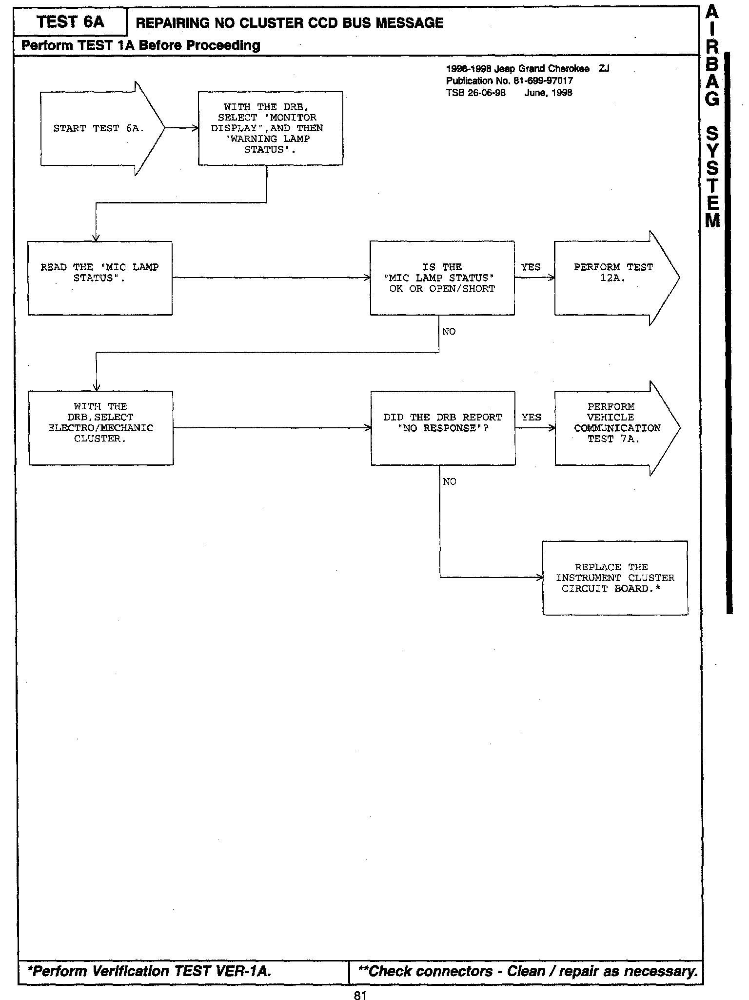</div><br/><br/><br/><br/>81<br/><br/>Revision to the blend door tests<br/><br/><h3>�D�S:</h3><div class="oxe-image">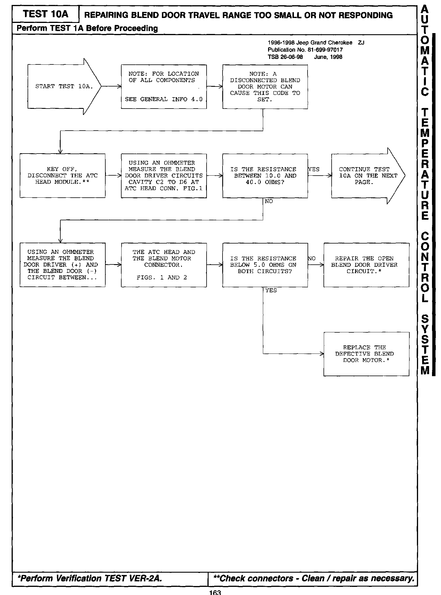</div><br/><br/><br/><br/>163<br/><br/><h3>�o�S:</h3><div class="oxe-image">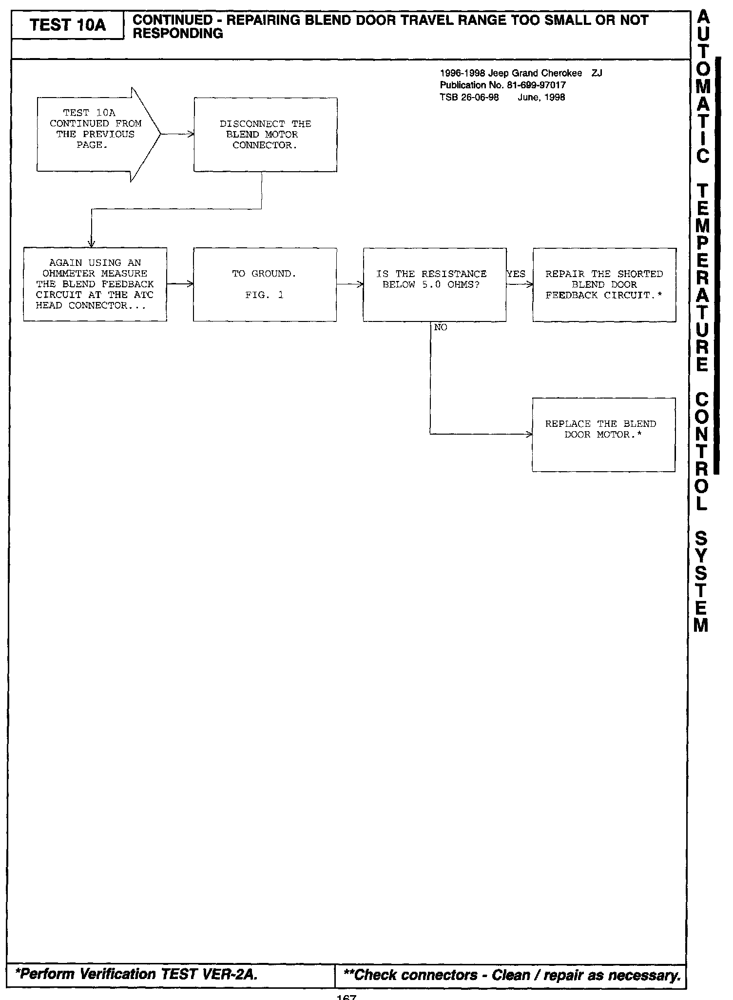</div><br/><br/><br/><br/>167<br/><br/>Revisions to the power window systems tests<br/><br/><h3>�ގS:</h3><div class="oxe-image">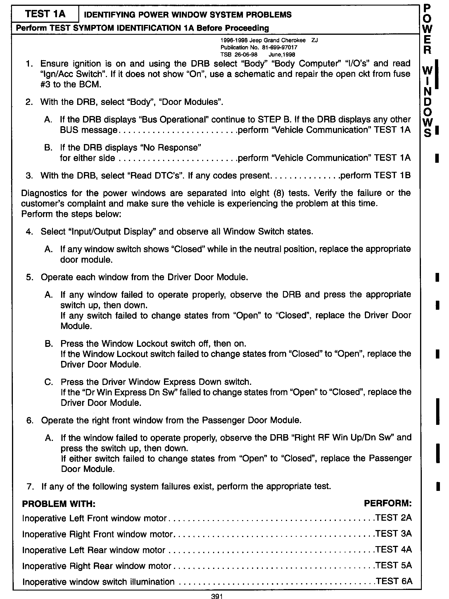</div><br/><br/><br/><br/>391<br/><br/><h3>�"�S:</h3><div class="oxe-image">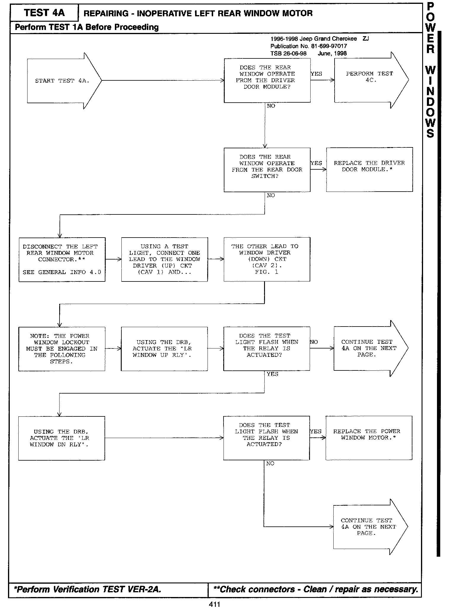</div><br/><br/><br/><br/>411<br/><br/><h3>M��S:</h3><div class="oxe-image">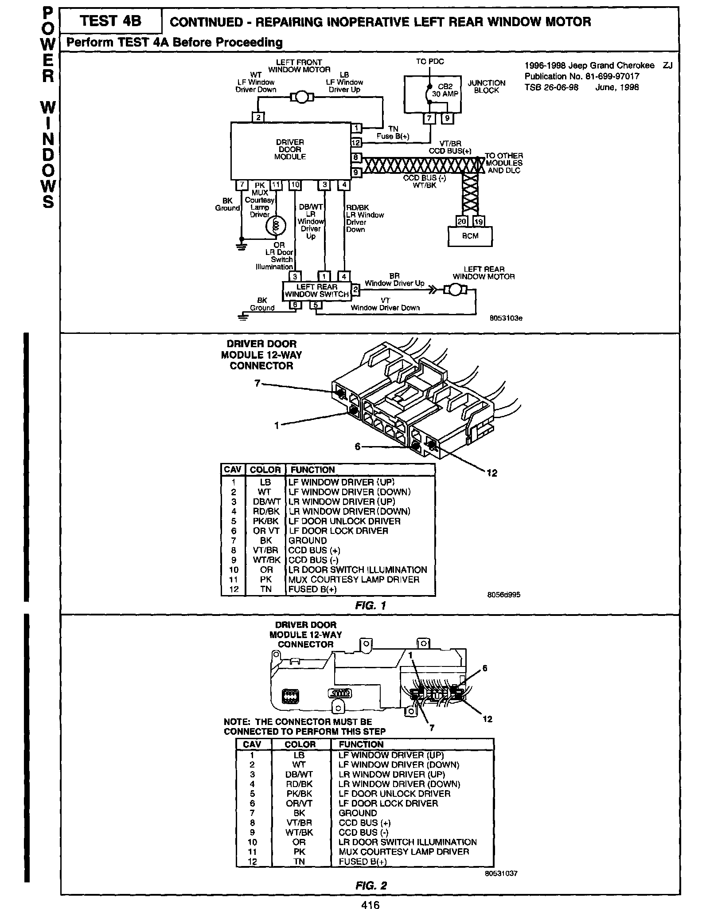</div><br/><br/><br/><br/>416<br/><br/><h3>�ϏS:</h3><div class="oxe-image">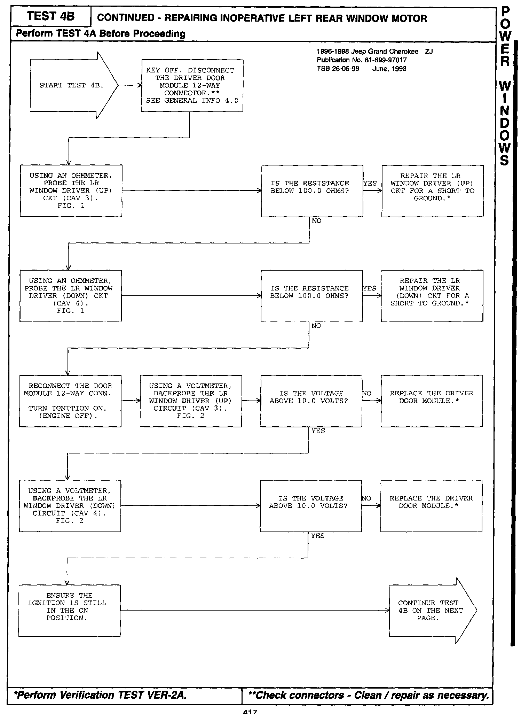</div><br/><br/><br/><br/>417<br/><br/><h3>�%�S:</h3><div class="oxe-image">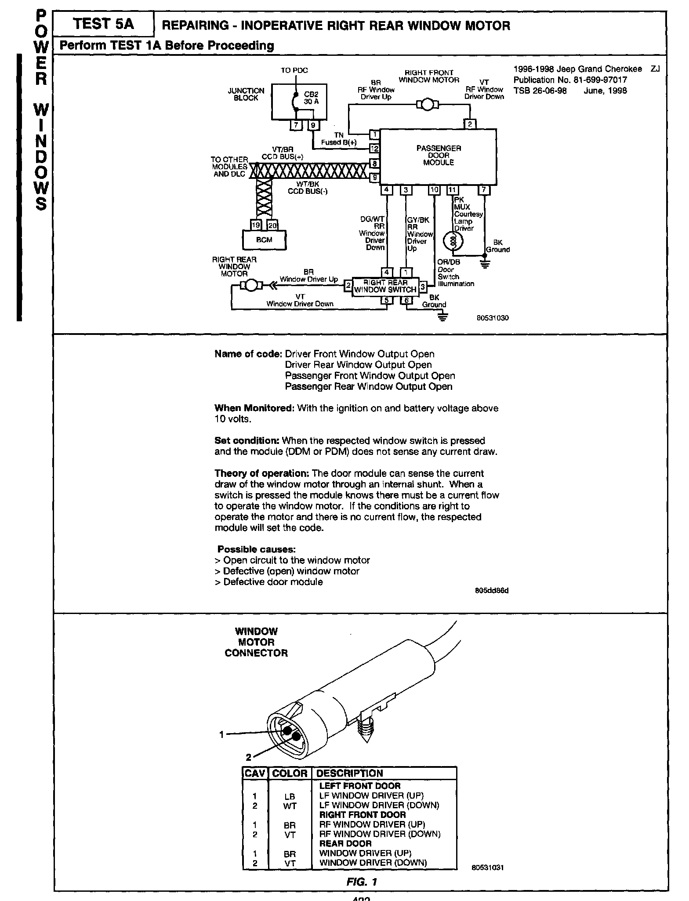</div><br/><br/><br/><br/>422<br/><br/><h3>Sn�S:</h3><div class="oxe-image">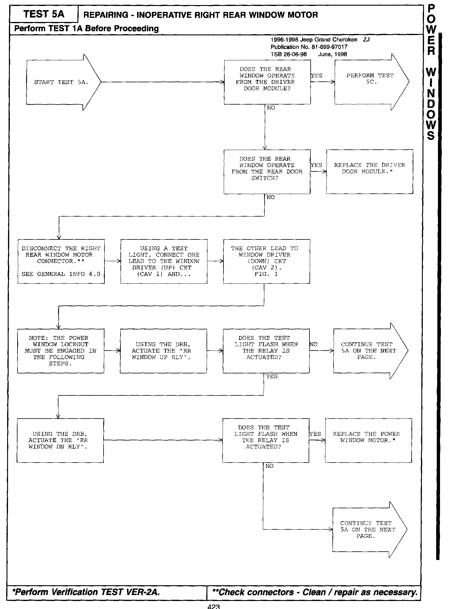</div><br/><br/><br/><br/>423<br/><br/><h3>�АS:</h3><div class="oxe-image">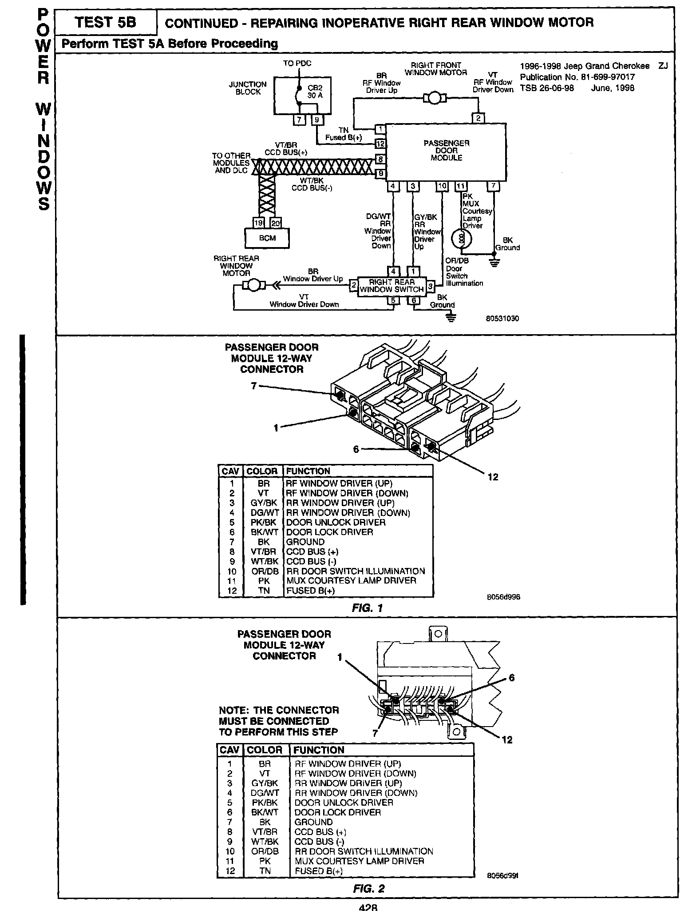</div><br/><br/><br/><br/>428<br/><br/><h3>#�S:</h3><div class="oxe-image">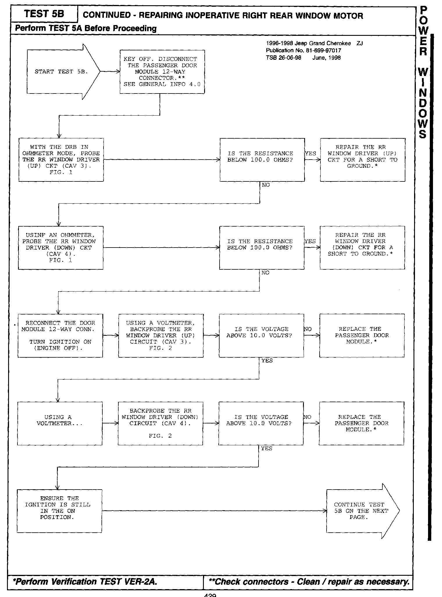</div><br/><br/><br/><br/>429<br/><br/>Revisions to the BUS short tests<br/><br/><h3>yp�S:</h3><div class="oxe-image">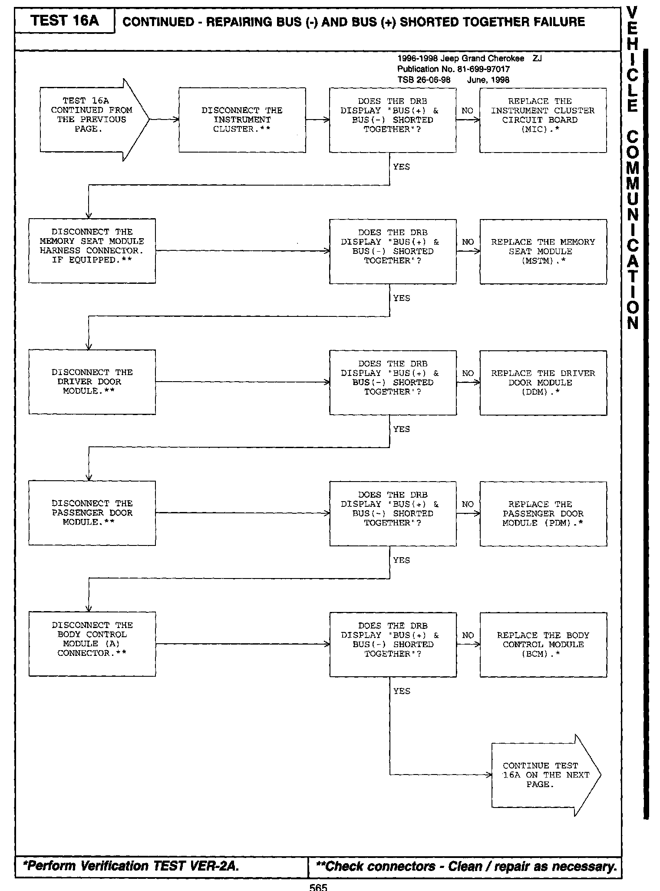</div><br/><br/><br/><br/>565<br/><br/>Revisions to the VTSS indicator lamp on tests<br/><br/><h3>U°�S:</h3><div class="oxe-image">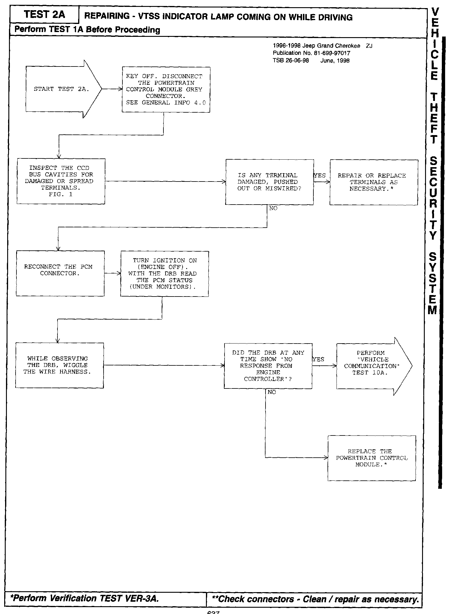</div><br/><br/><br/><br/>637</div>
<div class="theme-colors footer">
<i>pro multis</i> · <a href="../../../../../about.html">About Operation CHARM</a>
</div>
<script src="../../../../../script.js"></script>
</body>
</html>
